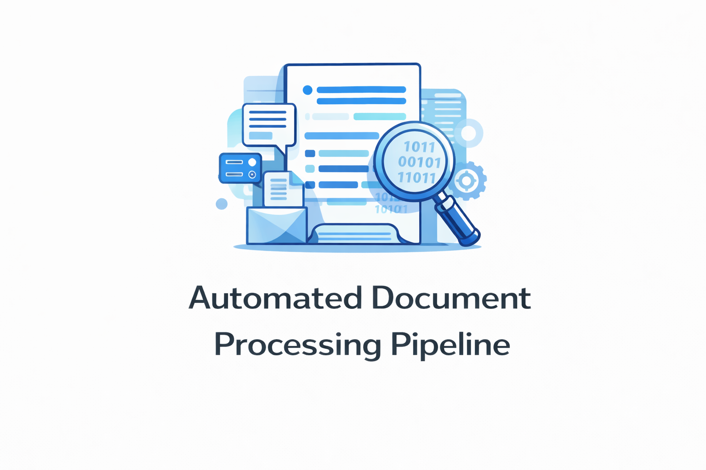
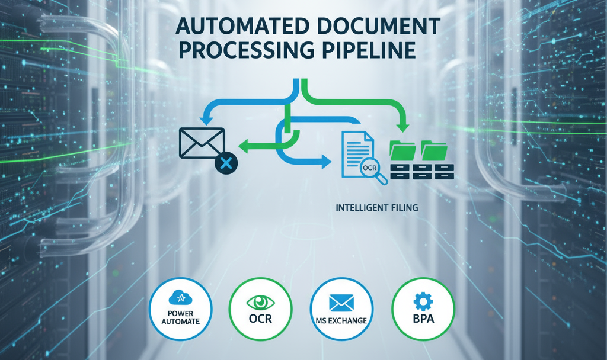
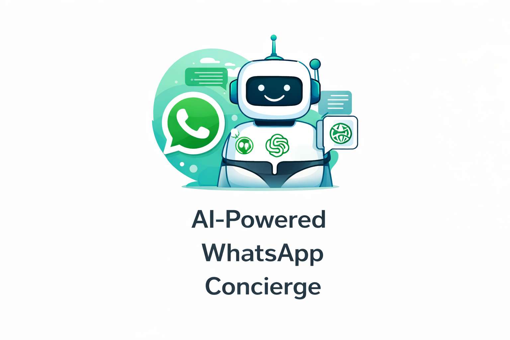
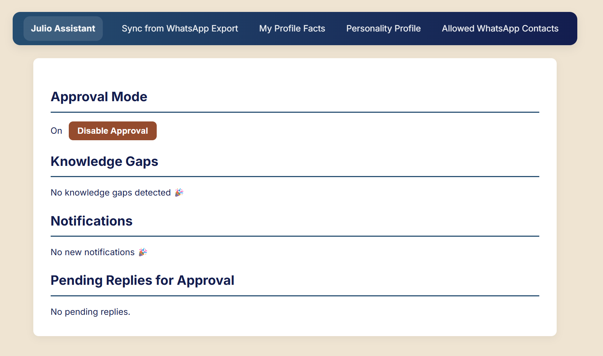
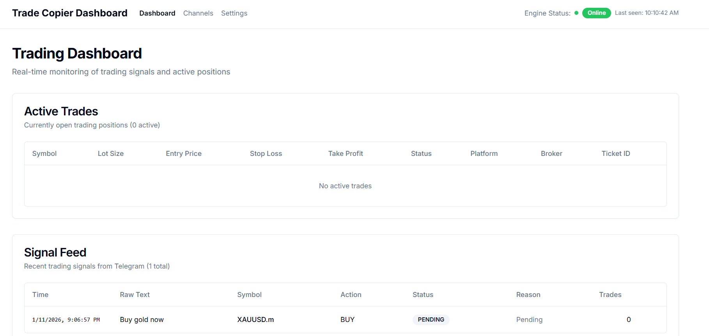
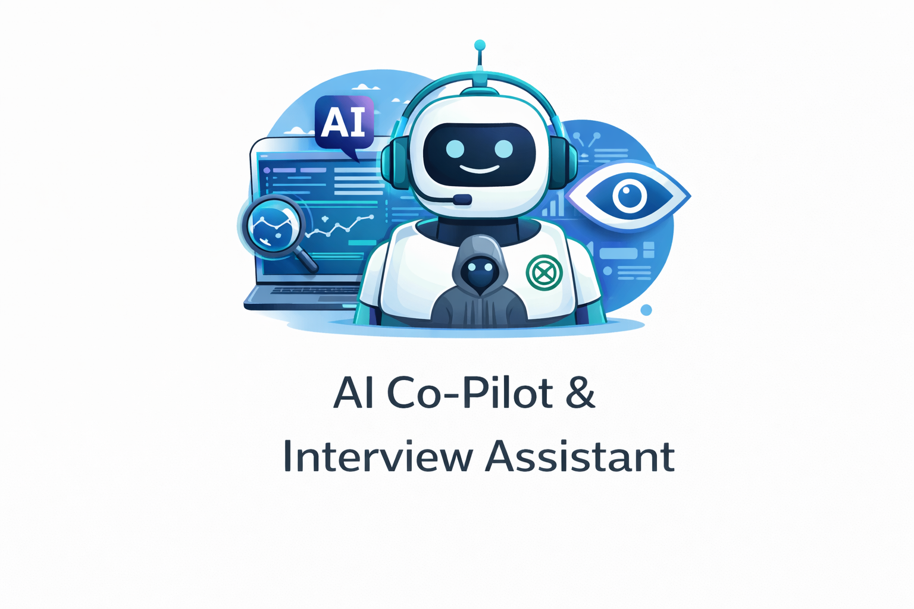
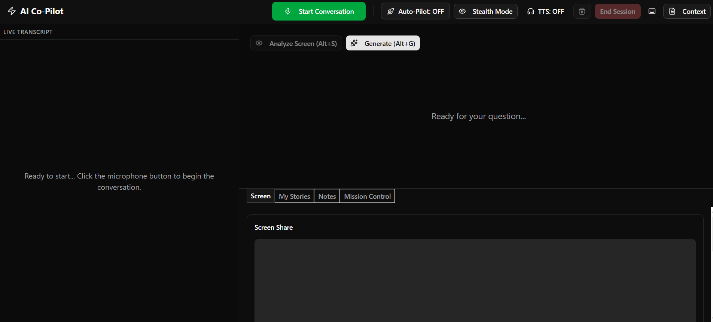
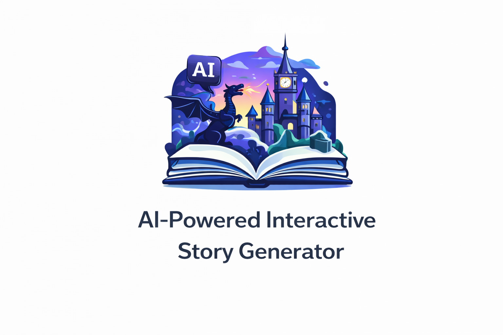
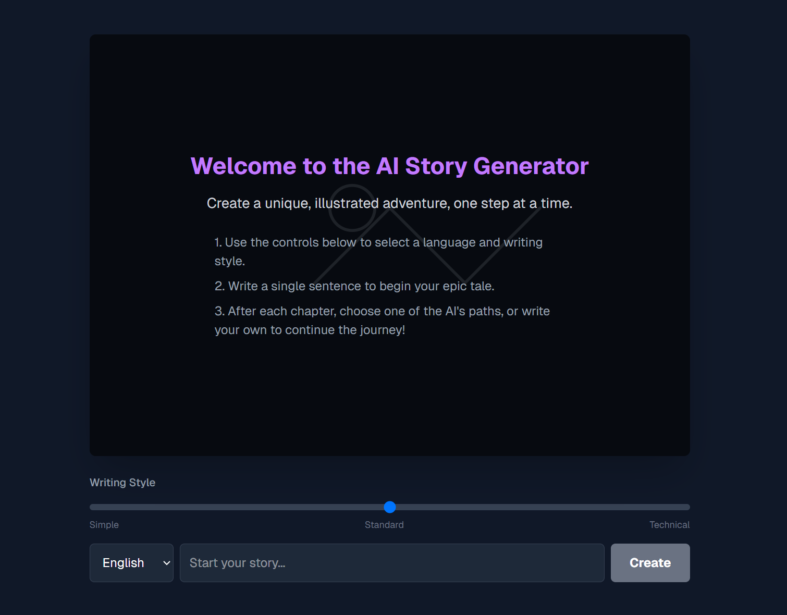

My Projects
{kind=link}


Automated Document Processing Pipeline Flagship Project
Optimized business workflow reducing manual document processing time by 80% through OCR and BPA. Monitors Exchange server, extracts data from PDF attachments, and intelligently files documents.
{kind=link}


AI-Powered WhatsApp Concierge
A smart bot using the ChatGPT API to manage WhatsApp conversations, drafting intelligent replies for user approval. Automates 24/7 customer engagement using GPT-4.
{kind=link}

Real-Time Trade Signal Copier
An automated desktop application that parses trade signals from Telegram and executes them instantly on the cTrader platform. Ensures < 100ms latency for high-frequency execution.
{kind=link}


AI Co-Pilot & Interview Assistant
A high-stakes conversational coach using Deepgram WebSockets for <100ms transcription and GPT-4o Vision for real-time on-screen problem solving. Features "Stealth Mode" and STAR-method story automation. Provides instant, context-aware AI guidance, reducing response latency in technical hurdles and high-pressure negotiations.
{kind=link}


AI-Powered Interactive Story Generator
A creative web app that orchestrates multiple generative AI models — text and image — into a single seamless pipeline, generating unique illustrated stories on demand. Demonstrates multi-model AI orchestration, prompt chaining, and managing sequential AI calls end to end.
About Me
I'm an automation specialist who builds systems and AI-powered tools that save businesses time, cut errors, and let teams scale without adding headcount. My background started in IT support — Tier 1 and Tier 2 — which taught me how businesses actually run and where the real friction lives before I ever build a solution. Today I design automations and integrate AI into real workflows: from intelligent document pipelines to real-time AI assistants. I care about one thing above all — solutions that get used and deliver measurable results.
I build using an AI-native workflow: I direct AI tools like Cursor and Claude to write and structure code, while I own the architecture, the problem-solving, and the decisions that make a system actually work for the business using it. I'm actively studying programming fundamentals and Python alongside this, and I learn automation platforms as I go — because I want to deepen what I can build directly over time. Right now my strength is knowing what to build, how to direct AI to build it well, and how to make sure it holds up in production.
Featured Innovation: Automated Document Processing Pipeline
My core focus is automation that eliminates manual work entirely. The Document Processing Pipeline is the clearest example: it monitors an inbox, applies OCR to extract data from incoming PDFs, and files documents automatically based on content — removing a repetitive, error-prone task from a real business workflow. I bring the same systems-thinking to every project, including my AI Co-Pilot, which uses the same foundations — live data streams, AI-driven decisioning, and structured output — applied to a real-time assistant instead of a background process.
Technical Skills
What People Say
"Julio consistently demonstrated strong problem-solving abilities, attention to detail, and excellent follow-through. His work ethic is among the strongest I have encountered: he is self-starting, goal-oriented, dependable, and trustworthy."